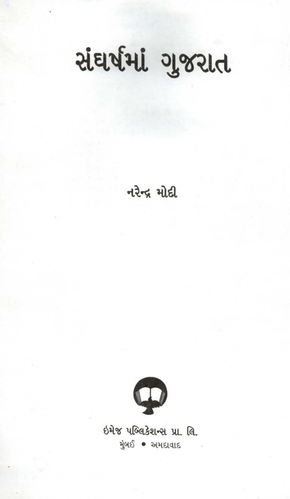

What this archive is for
It is a dedicated library for Narendra Modi’s books and written works, converted from scans into a readable HTML format instead of leaving them trapped inside raw PDFs.
This site exists to host scans and translated web editions of Narendra Modi’s written works. Each book preserves the original scanned pages while also offering OCR text and an English translation for easier reading and cross-checking.

It is a dedicated library for Narendra Modi’s books and written works, converted from scans into a readable HTML format instead of leaving them trapped inside raw PDFs.
Every book can include the original scanned page image, OCR-extracted source text, and an English translation so readers can compare the source directly.
Because these editions come from OCR and machine translation, some pages will be rough. The original scan is always shown so the source remains visible and verifiable.

A political memoir and documentary account by Narendra Modi about Gujarat’s role during India’s Emergency period, covering resistance, underground organization, civil activism, and the defense of democratic life. First published in 1978, the book was written in the aftermath of the Emergency years (1975–77), while Modi was 27 years old.
A Hindi edition of Narendra Modi’s account of Gujarat during the Emergency, centered on political resistance, underground networks, and democratic struggle.
A policy-oriented volume presenting Gujarat’s climate and development strategy, with a reader page plus a goals-and-outcomes assessment table.
A collection associated with Narendra Modi’s reflections on social equality, communal harmony, and the need to overcome caste exclusion and division in public life.